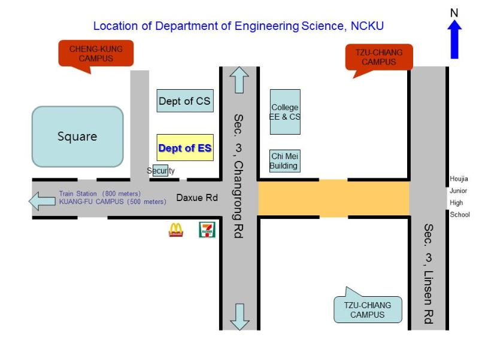

Location

Address
[701-01]No.1, University Road, Tainan City, Taiwan (Department of Engineering Science)
TEL:+886-6-2757575 ext. 63300
FAX:+886-6-2766549
Travel information
Tainan Station:
University Road, approximately 850 meters west
Taiwan High Speed Rail
- Transfer to the second floor or first floor of the corridor to the Shalun station exit 1.
- By the Shalun Station to Tainan Station.
- About 20 minutes to Tainan Train Station.
- From Tainan Railway Station (rear) within walking distance.
Bonus:food nearby
- es students like to eat:Mcdonalds
- NCKU students must eat:Yule street
- I want to eat meat:NIKU
- Hot Pot:Spicy Hot Pot.Mini Shabu Shabu.JHU JIAN
中文